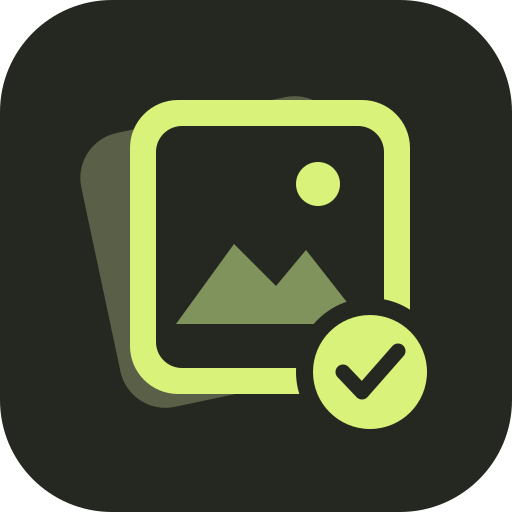
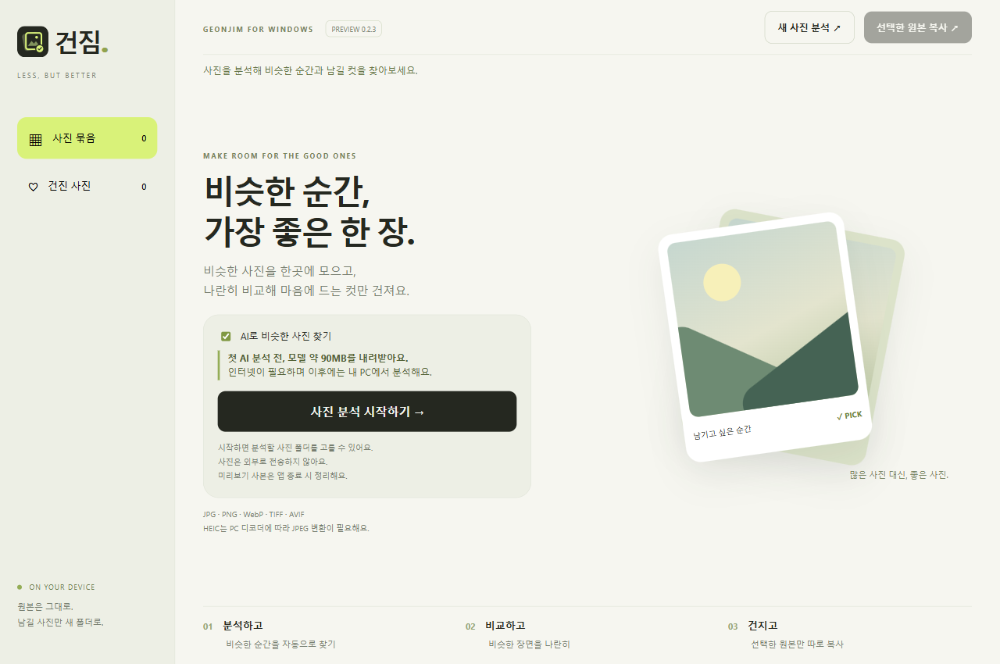

01 / PROJECT

Geonjim건짐Photo curation,
on your device.

건짐 Geonjim
비슷한 사진을 모아 비교하고, 남길 컷만 고르는 로컬 AI 앱.
만든 것부터, 좋아하는 것까지.
남겨두고 싶은 것들을 모읍니다.

Geonjim건짐Photo curation,
on your device.

비슷한 사진을 모아 비교하고, 남길 컷만 고르는 로컬 AI 앱.
아직 게시한 기록이 없어요.